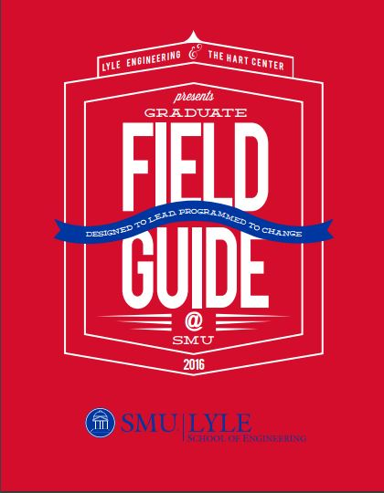

David Logan talks about the five stages of tribes and how leaders navigate through all five.

A program helped create a group of student leaders by incorporating design in to their education.
Quiz on Video #{{ctrl.videoquiz}}
1. Leaders need to be able to talk all the levels so that they can touch every person in society.
True
False
2. What is the greatest challenge in innovation in regards to the Five Stages?
Just helping someone move onto another stage at all.
Making a person stuck in Stage One want to get to Stage Two.
Jumping from Stage Two to Stage Five.
Moving your group from Stage Three to Stage Four.
3. Leaders need to be able to talk at all levels. But then what is it they must NOT do when they talk to others?
Prepare them the next level.
Leave them where they found them.
Try talking to them at level below and a level higher.
Engage with them at their current level to build trust.
4. Which tribe do you think leaders belong to? How would you be able to move into that? [free-text answer]
False
2. What is the greatest challenge in innovation in regards to the Five Stages?
Just helping someone move onto another stage at all.
Making a person stuck in Stage One want to get to Stage Two.
Jumping from Stage Two to Stage Five.
Moving your group from Stage Three to Stage Four.
3. Leaders need to be able to talk at all levels. But then what is it they must NOT do when they talk to others?
Prepare them the next level.
Leave them where they found them.
Try talking to them at level below and a level higher.
Engage with them at their current level to build trust.
4. Which tribe do you think leaders belong to? How would you be able to move into that? [free-text answer]
1. In Bertie County, how many people are there per square kilometer?
17
8
10
27
2.Which approach was NOT used when intersecting design and education for Project H?
Design for education
Designing education vocationally
Redesigning education
Design as education
3. What does design and building offer to public education?
A different kind of classroom.
Another reason to allocate more funding to education.
A chance for kids to enter the workforce early.
For OSHA to come by and check for regulation compliance.
How can you work on your engaging leadership skills in your classes or extracurricular activities? [free-text answer]
17
8
10
27
2.Which approach was NOT used when intersecting design and education for Project H?
Design for education
Designing education vocationally
Redesigning education
Design as education
3. What does design and building offer to public education?
A different kind of classroom.
Another reason to allocate more funding to education.
A chance for kids to enter the workforce early.
For OSHA to come by and check for regulation compliance.
How can you work on your engaging leadership skills in your classes or extracurricular activities? [free-text answer]
Recommended Books
File Guide
